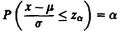
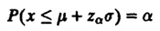
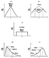
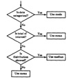

| Previous | Table of Contents | Next |
There are two parameters µ and σ, which are also the mean and standard deviations of x. A normal variate is denoted by N(µ, σ). A normal distribution with zero mean and unit variance is called a unit normal or standard normal distribution and is denoted as N(O, 1). In statistical modeling, you will frequently need to use quantiles of the unit normal distribution. An α-quantile of a unit normal variate z ~ N(0, 1) is denoted by zα. If a random variable x has a N(µ, σ) distribution, then (x – µ)/σ has a N(0, 1) distribution. Thus,

or

The areas under the unit normal pdf between 0 and z for various values of z are listed in Table A.1 of the Appendix.
There are two main reasons for the popularity of the normal distribution:
Exercises 12.1 to 12.7 have been designed to specifically test your understanding of the preceding concepts.
In the most condensed form, a single number may be presented that gives the key characteristic of the data set. This single number is usually called an average of the data. To be meaningful, this average should be representative of a major part of the data set. Three popular alternatives to summarize a sample are to specify its mean, median, or mode. These measures are what statisticians call indices of central tendencies. The name is based on the fact that these measures specify the center of location of the distribution of the observations in the sample.
Sample mean is obtained by taking the sum of all observations and dividing this sum by the number of observations in the sample. Sample median is obtained by sorting the observations in an increasing order and taking the observation that is in the middle of the series. If the number of observations is even, the mean of the middle two values is used as a median. Sample mode is obtained by plotting a histogram and specifying the midpoint of the bucket where the histogram peaks. For categorical variables, mode is given by the category that occurs most frequently.
The word sample in the names of these indices signifies the fact that the values obtained are based on just one sample (see Section 13.1). However, if it is clear from the context that the discussion is about a single sample, and there is no ambiguity, the shorter names mean, median, and mode can be used.
Mean and median always exist and are unique. Given any set of observations, the mean and median can be determined. Mode, on the other hand, may not exist. An example of this would be if all observations were equal. In addition, even if modes exist, they may not be unique. There may be more than one mode, that is, there may be more than one local peak in the histogram.
The three indices are generally different. Figure 12.1 shows five different pdf’s. Distribution (a) has a unimodal, symmetrical pdf. In this case, the mode exists with the mean, median, and mode being equal. Distribution (b) has a bimodal, symmetrical pdf. In this case, the mode is not unique. The median and mean are equal. Distribution (c) is a uniform density function. There is no mode and the mean and median are equal. Distribution (d) has a pdf skewed to the right (with a tail toward the right). For this distribution, the value of the mean is greater than the median, which in turn is greater than the mode. Finally, distribution (e) has a pdf skewed to the left; that is, it has a tail on the left. In this case, the mean is less than the median, which is less than the mode.
The main problem with the mean is that it is affected more by outliers than the median or mode. A single outlier can make a considerable change in the mean. This is particularly true for small samples. Median and mode are resistant to several outlying observations.
The mean gives equal weight to each observation and in this sense makes full use of the sample. Median and mode ignore a lot of the information.
The mean has an additivity or linearity property in that the mean of a sum is a sum of the means. This does not apply to the mode or median.
A common mistake inexperienced analysts make is to specify the wrong index of central tendency. For example, it is common to specify the mean regardless of its validity in a particular situation.
The flow chart of Figure 12.2 shows a set of guidelines to select a proper index of central tendency. The first consideration is the type of variable. If the variable is categorical, the mode is the proper single measure that best describes that data. An example of categorical data is the type of microprocessor in various workstations. A statement such as “the most frequent microprocessor used in workstations is the 68000” makes sense. The mean or median of the type of processor is meaningless.

FIGURE 12.1 Five distributions showing relationships among mean, median, and mode.
The second consideration in selecting the index is to ask whether the total of all observations is of any interest. If yes, then the mean is a proper index of central tendency. For example, total CPU time for five queries is a meaningful number. On the other hand, if we count number of windows on the screen during each query, the total number of windows during five queries does not seem to be meaningful. If the total is of interest, specify the mean.

FIGURE 12.2 Selecting among the mean, meadian, and mode.
If the total is of no interest, one has to choose between median and mode. If the histogram is symmetrical and unimodal, the mean, median, and mode are all equal and it does not really matter which one is specified.
If the histogram is skewed, the median is more representative of a typical observation than the mean. For example, the number of disk drives on engineering workstations is expected to have skewed distribution, and therefore, it is appropriate to specify the median number. One simple to way to determine skewness for small samples is to examine the ratio of the maximum and minimum, ymax/ymin, of the observations. If the ratio is large, the data is skewed.
The following are examples of selections of indices of central tendencies:
| Previous | Table of Contents | Next |
){kind=link}
){kind=link}
){kind=link}
){kind=link}